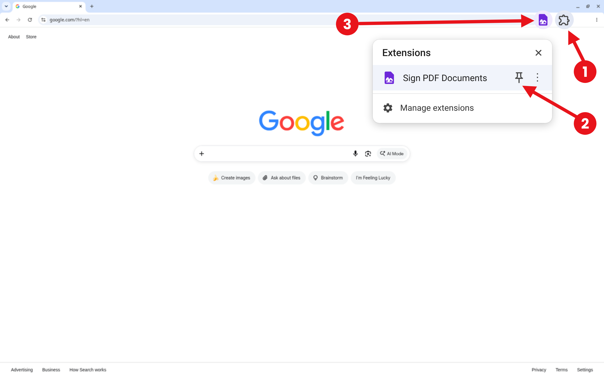

Thanks for installing Sign PDF Documents
Click the puzzle piece in the top right of your browser, then click the pin next to Sign PDF Documents:

Then click the icon and open your PDF.
Click the puzzle piece in the top right of your browser, then click the pin next to Sign PDF Documents:

Then click the icon and open your PDF.